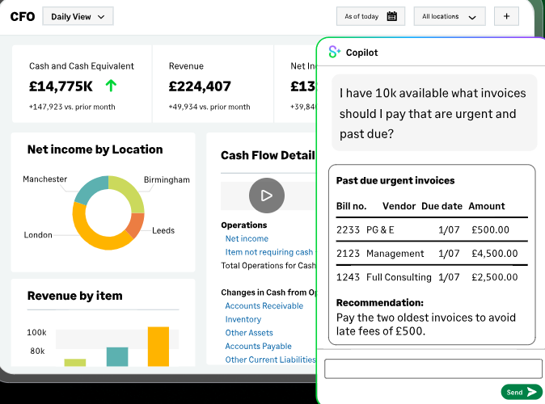

Finance Infrastructure Designed for the Business You Are Building.
The AI-native cloud finance platform for mid-market organisations. Multi-entity consolidation, dimensional reporting, and an open API architecture that integrates your full technology stack. Implemented and governed by Mysoft from Stage 1 to Stage 4.
Built for Finance-First Organisations
Multi-Entity Consolidation
Automated consolidation across unlimited entities, currencies, and jurisdictions. Real-time group reporting without manual reconciliation.
Dimensional Reporting
Chart of accounts with project, location, department, and custom dimensions. Reporting sliced any way the business requires.
Finance Intelligence Agent
Ask questions of your financial data in plain language. Instant, actionable answers without report building or SQL.
Close Workspace
Real-time close management across AR, AP, GL, and cash. Track, manage, and streamline close activities from one view.
SOC 1 / SOC 2 Compliance
Cloud-native SaaS with enterprise-grade security. Audit trail for every transaction and AI-executed action.
Open API Architecture
REST API integration with your full technology stack — payroll, CRM, e-commerce, and the Mysoft ISV ecosystem.
Intacct configured for your industry
The same platform, configured differently for each sector's reporting requirements, compliance obligations, and operational model.
Project Revenue Recognition
ASC 606 / IFRS 15 compliant revenue recognition across time-and-materials, fixed-fee, and milestone billing arrangements. Automated recognition schedules with real-time deferred revenue visibility.
Project Profitability Reporting
Real-time project P&L with resource cost allocation, subcontractor spend, and utilisation rates. Finance visibility that matches the way the business actually works.
Resource & Timesheet Integration
Native integration with project management and timesheet tools. Labour costs flow directly into project accounting without manual reconciliation.
Subscription Billing Automation
SaaS and recurring revenue models supported natively. Billing schedules, renewal automation, and MRR/ARR reporting built in — not bolted on.
Regulatory Reporting
Dimensional reporting designed for FCA-regulated entities. Segment reporting by entity, fund, or regulatory unit — with full audit trail for every automated entry.
Fund & Portfolio Accounting
Multi-fund structures managed in a single instance. Allocation rules, distribution waterfall modelling, and LP reporting — all within the core platform.
Audit-Ready Controls
Segregation of duties enforced at the platform level. Every automated decision generates a structured audit record — designed to satisfy Big Four methodology requirements.
Multi-Currency Consolidation
Automated FX revaluation, intercompany eliminations, and consolidated IFRS reporting across unlimited legal entities and currencies.
Fund & Grant Accounting
Restricted and unrestricted fund management with automatic allocation rules. Grant compliance reporting and spend tracking against funder requirements — without spreadsheet reconciliation.
Charity SORP Compliance
Chart of accounts and reporting templates aligned to Charity SORP requirements. Trustee reporting, management accounts, and statutory accounts from a single data source.
Healthcare Cost Allocation
Service-line and site-level cost allocation for multi-site healthcare providers. Operational reporting that connects clinical activity to financial performance.
Payroll & Grant Compliance
Integration with HR and payroll systems. Staff cost allocation by fund, programme, or project — with the audit trail required by public funders and regulators.
Unlimited Entity Consolidation
Automated consolidation across unlimited subsidiaries, joint ventures, and holding structures. Real-time group P&L without month-end manual uploads.
Intercompany Automation
Intercompany transactions automated and eliminated at consolidation. No manual journal adjustments, no reconciliation spreadsheets, no last-minute month-end corrections.
Multi-Jurisdiction Compliance
Tax rules, local GAAP requirements, and statutory filing obligations managed per entity. Consolidation that separates local compliance from group reporting automatically.
Dimensional Reporting
Slice group performance by entity, region, department, cost centre, or any custom dimension. Board-level reporting that reflects how the group is actually managed.

AI-native finance infrastructure from day one
Sage Intacct is built for the organisation that needs finance to work faster, smarter, and with less manual effort. The platform is configured with AI readiness architecture from implementation — not retrofitted as an add-on.
Multi-entity consolidation, dimensional reporting, and an open API that connects your full technology stack. Mysoft implements Intacct with our Agentic Finance Governance Framework embedded from Stage 1.
Sage Copilot Is Embedded, Not Bolted On.
Sage Copilot and the Finance Intelligence Agent are embedded in Sage Intacct — not added as an afterthought. Every AI feature operates on the governed data architecture Mysoft configures at Stage 1.
Finance Intelligence Agent
Natural language queries across your financial data. Instant answers to the questions CFOs ask most — without waiting for an analyst to run a report.
Source: Sage Intacct AI press release, February 2026.
Close Automation
Generally available in the UK and US. Close Workspace and Close Assistant track, manage, and streamline close activities with real-time visibility.
Source: Sage Intacct AI press release, April 2026.
Subledger Reconciliation Assistant
Automatically compares the general ledger with all sub-ledgers and instantly identifies discrepancies. Removes the highest-risk manual step in the close cycle.
Cash Intelligence and Variance Analysis
Real-time cash position monitoring and AI-powered period-on-period variance flagging. Finance team attention directed to where it matters most.
Sage Intacct Implementation from Stage 1 to Stage 4
Finance Operations Review
Structured discovery establishing your AI readiness baseline and mapping Stage 2 automation candidates. The scope document that drives Stage 1 implementation.
Stage 1 — Configured for AI Readiness
Dimensional chart of accounts, multi-entity consolidation architecture, tiered approval workflows, CFO dashboards, and bank reconciliation. Governance Configuration Record delivered at go-live.
Stage 2 — Automation Layer
Native Intacct AP/AR automation, Cash Intelligence, and intelligent GL. Extended by WebExpenses, Payhawk, TrueCommerce, or Stampli as required. Tiered Approval Model activated.
Stage 3 and Stage 4 — AI and Agentic Finance
Sage Copilot, Finance Intelligence Agent, BI partners (Velixo, Swoop Analytics, ZAP BI), and — at Stage 4 — governed agentic workflows under the full governance framework.
Mysoft is a Sage Intacct implementation partner with dedicated UK and North America delivery capability.
Sage Intacct by Industry
Professional Services and SaaS
Project accounting, revenue recognition (ASC 606/IFRS 15), deferred revenue, and multi-entity consolidation for service businesses and technology companies.
Explore →Not-for-Profit and Healthcare
Fund accounting, grant management, restricted and unrestricted income, trustee reporting, and Charity SORP compliance support.
Explore →Financial Services
Multi-entity reporting, full audit trail, segregation of duties, and Sage AI Trust Label for model transparency in regulated environments.
Explore →Legal
Matter-level billing, multi-entity consolidation, and dimensional reporting for law firms and legal services businesses.
Extended by a Curated Partner Ecosystem
Velixo
Excel-connected reporting and budgeting for Intacct finance teams.
Swoop Analytics
Automated insight delivery and anomaly detection for Intacct data.
ZAP BI
Self-service BI and analytics for finance teams on Sage Intacct and Sage X3.
WebExpenses / Payhawk
Expense management and spend control integrated with Intacct.
TrueCommerce
EDI and supplier integration for Intacct-based businesses.
Sage People
HR and workforce management integrated with Sage Intacct.
Book a Tailored Sage Intacct Demonstration.
Scoped to your sector and stage of evaluation — with a Mysoft Intacct specialist.